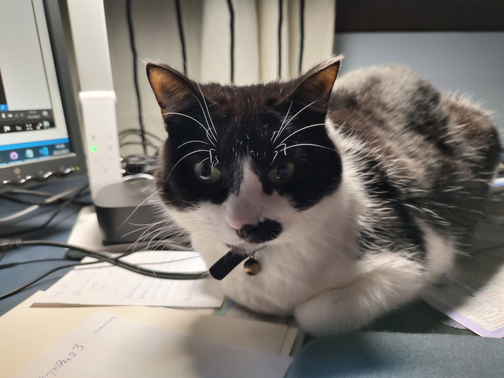

Tarinaa Täplän elämästä
Täplä syntyi Uusi-Värtsilässä 15.8.2012. Kävimme katsomassa syntyneitä kissoja kun ne olivat kolme viikkoa vanhoja ja valitsimme Täplän, joka oli myös talon tyttären suosikki. Pentueessa oli viisi kissanpentua.
Mielenkiinto heräsi pentueessa Täplään, koska nenän alueella ja leuan alla on musta täplä. Siitä hän sai myös nimensä. Täplä on musta-valkoinen maatiaiskissa.
Täplä pääsi muuttamaan meille Tohmajärvelle 26.9.2012.
Kotonamme oli ennestään Pörrö-kissa, kun tulit meille. Pörrö ei aluksi oikein halunnut hyväksyä Täplää, mutta Pörrö oppi kuitenkin tulemaan toimeen Täplän kanssa.
Täplä otti kaikessa mallia vanhemmasta kissasta Pörröstä.
Täplä on saanut elää vapaata maalaiselämää omikotitalossamme. Naapurissa on navetta, ja yksi tehtävä kissalla onkin pitää hiiret ja rotat kurissa, jotta ne eivät lisääntyisi liikaa pihapiirissämme.
Talvisin Täplä on enimmäkseen sisällä, varsinkin yöt. Ulkona hän käy säästä riippuen päivisin joko tekemässä tarpeensa, tai viettää aikaa myös metsästellen.
Kun sää alkaa lämmetä, viettää hän aina enemmän ja enemmän aikaa ulkona. Kesällä Täplä on enimmäkseen ulkona, varsinkin öisin. Päivisin hän nukkuu usein sisällä.
Täplä on seurallinen kissa, hän pitää siitä, että samassa tilassa on joku tuttu ihminen. Hän on yleensä työhuoneessani seuranani kun teen etätöitä ja opiskelen. Enimmäkseen hän nukkuu huoneessa olevalla sängyllä, mutta kun poistun huoneesta pidemmäksi aikaa, hän seuraa perässä.
